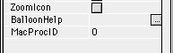
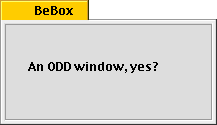

Proc IDs
One of the best new features of 2.0.2 is the procID property for all windows. This allows you to escape the limitations of the "Frame" property by giving you many, many more window types to choose from. Here's where you enter it:

Unfortunately, you don't get a popup menu–you have to enter a number. This number can represent a variety of things. Here are some built-in values you can use:
Rounded Windows (like the Calculator)
16: Standard Rounded Window
18 to 31: Rounded windows with various degrees of roundness
System 7 Floating Windoids
-1984: Regular floater with Close Box
-1982: Regular Floater with Grow Box
-1980: Regular Floater with Zoom Box
-1978: Regular Floater with Zoom&Grow Box
-1976: Side Title Floater with Close Box
-1974: Side Title Floater with Grow Box
-1972: Side Title Floater with Zoom Box
-1970: Side Title Floater with Grow&Zoom Box
Regular Windows
0: Normal Document Window
1: Immovable Modal Dialog
2: Plain Box
3: Shadowed Box
5: Movable Modal Dialog
13: Movable Modal Dialog w/ zoom box (if checked)
1040: Non-modal Plain Box
1041: Non-modal Shadow Box
1044: Red Outline System Modal Alert
1045: Movable Red Outline System Modal Alert
1046: Navigation Services (movable modal w/ resize triangle)
Popup Windows
1008: Normal Finder Popup Window (these don't have Finder functionality)
Appearance Manager Only
1027: OS 8 document window with horizontal zoom box
1029: OS 8 document window with vertical zoom box
1056: OS 8 floater
1058: OS 8 floater w/ grow box
1062: OS 8 w/ horizontal zoom box
1064: OS 8 w/ vertical zoom box
1072: OS 8 side floater (can have grow box)
1074: OS 8 side floater w/ grow box
1076: Horizontal Zoom
1080: Vertical Zoom
Balloon Help (clicks on them go through to underneath)
2016: Pointer on top left (on left side)
2017: Pointer on top left (on top side)
2018: Pointer on top right (on top side)
2019: Pointer on top right (on right side)
2020: Pointer on lower right (on right side)
2021: Pointer on lower right (on bottom side)
2022: Pointer on lower left (on bottom side)
2023: Pointer on lower left (on top side)
That's not all there is though. To create a custom type of window, you can use a WDEF resource (they're in quite a few applications). To do this, copy the resource into your compiled application. Then, make the procID its resource ID times 16. That's it! Now you can have incredibly bizarre windows of any type! I took the WDEF resource out of Kaleidoscope 1.5's BeBox scheme, and made a window in an RB-made app look like this:

It's not too tough, and it's incredibly useful.